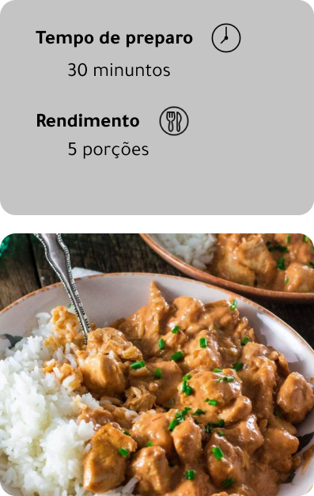

Ingredientes
- 1 peito de frango cortado em cubos
- 2 dentes de alho
- 1 cebola picada
- 3 colheres de ketchup
- 2 colheres de mostarda
- 1/2 xícara de cogumelos
- 1 caixa de creme de leite
- 1 colher de azeite
- Sal e pimenta à gosto
Modo de preparo
- Em uma panela frite o alho e a cebola no azeite;
- Depois acrescente o frango e deixe dourar;
- Adicione o ketchup, a mostarda e os cogumelos;
- Incorpore o creme de leite e retire do fogo antes de ferver;
- Sirva com arroz branco e batata palha.
